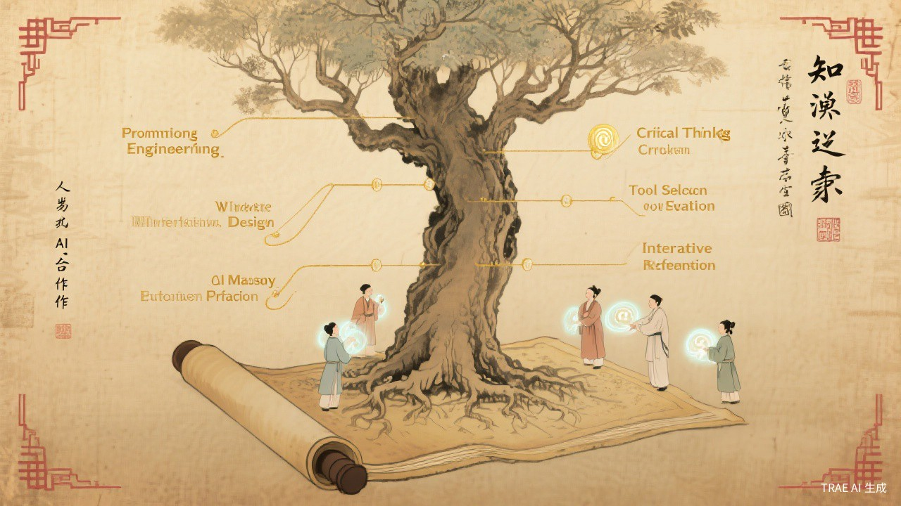

知识之树 — AI协作能力的六大根基与成长路径
AI 协作能力精进指南
The Art of AI Collaboration · A Practical Mastery Guide
不是教你怎么用AI，而是教你怎么和AI一起思考 实用手册

知识之树 — AI协作能力的六大根基与成长路径
AI不会取代善于思考的人，但善于借助AI思考的人，会取代不用AI的人。
关键不在于你问了多少问题，而在于你问了什么问题、如何追问、以及如何判断答案。
— 写给每一位想要真正掌握AI的人
从"试试看"到"离不开"，你的AI协作处于哪个阶段？
真正拉开差距的，从来不是"会不会用AI"，而是这六项底层能力
提示词不是"打字聊天"，而是一种精确表达需求的能力。好的提示词 = 清晰的目标 + 充足的上下文 + 明确的约束 + 合理的期望。
AI擅长处理明确、边界清晰的单一任务，而非模糊的宏大目标。"帮我写个方案"永远不如"先列出方案大纲，再逐节展开"效果好。
AI的输出看起来总是自信且流畅，但这不代表正确。你必须建立一套验证习惯：事实核查、逻辑审查、交叉验证。永远不要直接使用未经审核的AI输出。
AI的"记忆力"有限且不稳定。学会主动管理上下文——在关键节点总结对话、提供背景摘要、引用之前的结论——能让长对话保持连贯。
第一次的输出几乎不可能完美。高手和菜手的区别在于迭代能力——精准定位问题、给出明确修改方向、逐步逼近理想结果。而不是"重新来一遍"。
没有任何AI工具是万能的。不同任务需要不同工具，高手的核心能力是知道什么时候用什么工具，以及如何让多个工具协同工作。
| 任务类型 | 推荐工具 | 适用场景 |
|---|---|---|
| 文案写作 | ChatGPT / Claude | 长文创作、润色、翻译 |
| 编程开发 | Claude / Cursor | 代码生成、调试、重构 |
| 图像生成 | Midjourney / DALL·E | 设计稿、插图、概念图 |
| 数据分析 | ChatGPT + Python | 表格处理、可视化、统计 |
| 信息检索 | Perplexity / Kimi | 资料调研、文献综述 |
这些坑，几乎每个人都踩过。看看你中了几个？
直接问"XXX是什么"，得到的是泛泛而谈的百科式回答，而非针对你需求的有价值信息。
把一个复杂项目从头到尾丢给AI，期望一次对话就得到完美结果。结果往往是：方向偏了、细节错了、格式乱了。
AI的回答总是自信、流畅、看起来很专业。但"看起来对"和"真的对"是两回事。AI会编造不存在的引用、数据和案例。
能熟练使用AI完成自己的工作，但无法把这套方法教给别人。说明你对AI的理解停留在"手感"层面，而非系统认知。
总觉得换个更贵的模型就能解决问题，但同样的提示词，在不同模型上的效果差异远小于"好提示词 vs 差提示词"的差异。
把AI当成"代脑"，自己不动脑筋就直接用AI的答案。长期下来，独立思考能力反而退化。
光看不练假把式。以下是六组循序渐进的练习，建议从第一组开始
选择你熟悉的一个工作场景，用"角色+背景+任务+约束"的框架写一段提示词，对比"简单提问"和"结构化提示词"的输出差异。
让AI生成一段专业内容，然后要求它自己找出问题。观察AI能发现多少问题，以及哪些问题它发现不了。
选择一个你工作中的真实复杂任务（如写方案、做调研、设计流程），练习用AI把它拆解成可执行的子任务序列。
刻意练习"不说重写"的能力。面对不满意的AI输出，尝试用最精准的反馈让它局部修改，而非全部重来。
完成一个需要多种能力的任务（如"做一份带图表的市场分析报告"），练习组合使用2-3个AI工具。
把你日常使用AI的经验整理成一份个人AI使用手册（SOP），包含常用提示词模板、工具组合方案、避坑清单。
从"会用"到"精通"的关键思维转变
它能做很多事，但需要你给出清晰的指令、检查它的成果、指出它的错误、教它你的标准。你对AI越有耐心，AI给你的回报越丰厚。
每次得到满意的结果时，保存那个提示词。每次迭代优化后，更新保存。三个月后，你会拥有一套极具个人价值的AI协作资产。
不要只让AI回答你的问题。试着问它："关于这个话题，你觉得我还需要了解什么？""我的思路有什么盲区？""如果从反面看，有什么不同的观点？"——这才是AI真正的价值所在。
了解AI的边界比了解AI的能力更重要。AI不擅长：承担法律责任、做道德判断、理解弦外之音、处理高度模糊的情感问题。知道什么时候不用AI，和知道什么时候用AI一样重要。
AI能生成内容，但决定生成什么内容的是人。AI能分析数据，但定义分析框架的是人。AI能给出方案，但做最终决策的是人。持续提升你的判断力、审美力和决策力——这些才是真正的核心竞争力。
学会与AI协作，不是让你变得更像机器，
而是让机器帮你腾出时间与精力，
去做那些只有人才能做的事——
创造、判断、感受、连接。
— 御智录 · 卷末